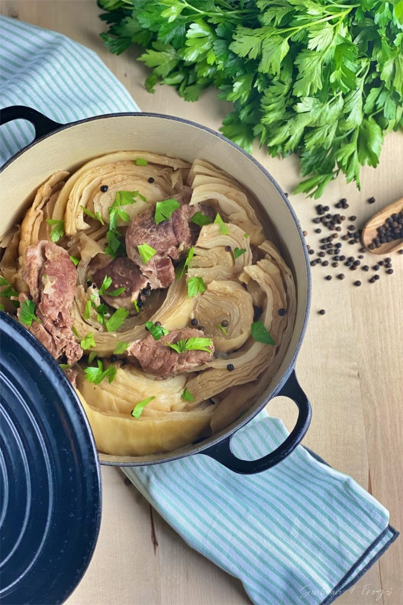

You Lost!
Unfortunately, you chose the wrong door. Since you didn't switch, your chances of winning was only 33%
Still, you found a recipe. Not the one you were looking for, but better to have something than nothing.
“Fårikål”

Ingredients:
- 2 kg Lamb meat on the bone (cut in 3 cm thick slices)
- 1,5-2 kg Cabbage
- 2 tbsp Butter
- 4 tsp Black pepper grains
- 2 tbsp Flour
- 400 ml water
- Salt
Instructions:
- Cut the cabbage in four and remove the hard part in the center. Cut each part in further 3 pieces lengthwise
- Add the butter in small pieces in a big casserole.
- Start with a layer of meat, then cabbage, meat, cabbage…
- Drizzle the flour, pepper grains and salt in between each layer.
- Bring the water to boil and pour it over the layers.
- Cover and bring to boil. Let it simmer on low heat for 3 hours.
- It is important not to stir! If you stir your cabbage will decompose.
- The meat should be so tender that it easily falls off the bone. If it is not, you need to cook it a bit longer…